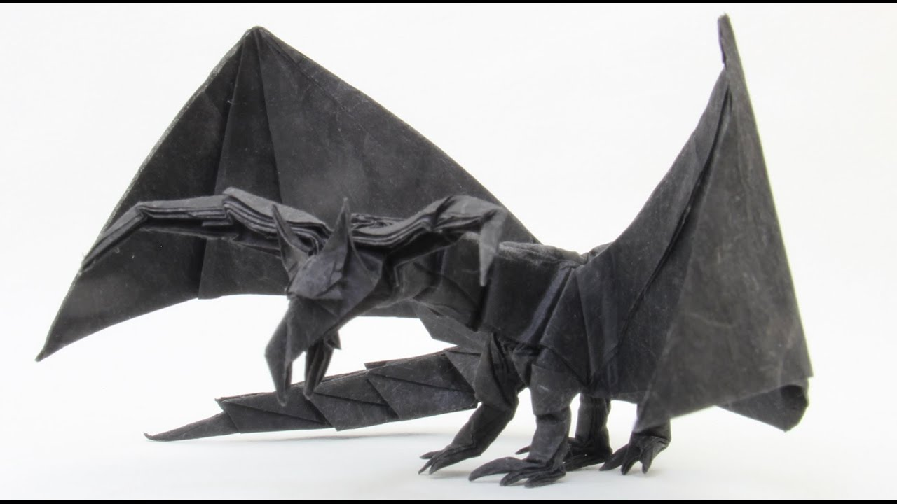
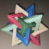

Origami
I love to play with origami papers and make complex Origamis
But the best of them are listed here.
1. Tadoshi Mori's Darkness dragon
This dragon origami took me a 4 days to complete and was only able to make it with a chart paper. The detailing was a lot.

Origami Dragon
2. 5 Intersecting tedrahedron
This is a modular origami. It took me 2 days to complete and the end result was very nice.

5 Intersecting tedrahedron
Follow Me
About Me